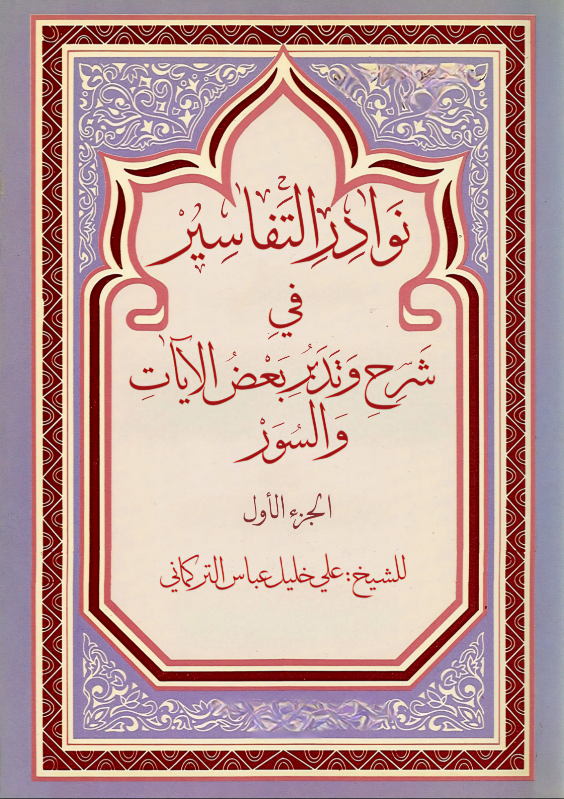

📚
مِنْ مُؤَلَّفَاتِ الشَّيْخِ

نَوَادِرُ التَّفَاسِيرِ
فِي شَرْحِ وَتَدَبُّرِ بَعْضِ الآيَاتِ وَالسُّوَرِ
كتابٌ يجمع لطائف وفوائد نادرة في تفسير آياتٍ مختارة من كتاب الله عزّ وجلّ، بأسلوب الشيخ التدبري المعروف الذي يجمع بين عمق العلم وجمال البيان.
قراءة الكتاب على تليجرام
مَوْسُوعَةُ دُرَرِ الْحَيَاةِ فِي ظِلَالِ الْقُرْآنِ
مَوْسُوعَةٌ تَفْسِيرِيَّةٌ شَامِلَةٌ عَلَى أَجْزَاءٍ
موسوعة تفسيرية موسّعة تجمع دُرَراً مستخلَصة من ظلال القرآن الكريم، مرتَّبة على أجزاء بحسب السور، بأسلوب الشيخ التدبري المعروف.
تصفّح أجزاء الموسوعة✦ المزيد من مؤلفات الشيخ لا يزال قيد الرفع على المنصة بإذن الله ✦